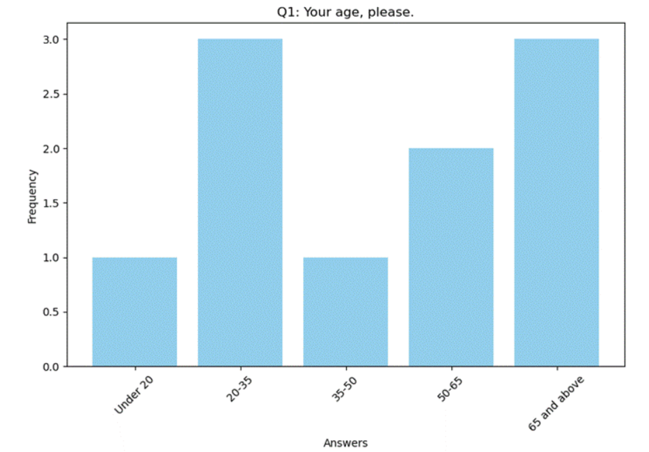

HCI-来到天津卫
Team Name:来到天津卫
Members:
刘奕彤
学号：202022161228 电话：18561346515 邮箱: hustlemaking@gmail.com
张一凡
学号：202020130187 电话：18669886749 邮箱：hdzyfofficial@qq.com
倪浚桐
学号：202022161224 电话：18669886749 邮箱: 1733229553@qq.com
薛正康
学号：202022161215 电话：13210081037 邮箱：2549763283@qq.com
Project Proposal：
摘要：我们提出开发一款名为SmartMeds的智能手机应用，旨在解决老年人群体药物管理的关键问题。全球老龄人口数量的急剧增加伴随着对帮助老年人有效管理药物的创新解决方案的迫切需求。药物不依从是一种普遍存在的问题，不仅影响老年人的健康和福祉，还导致庞大的医疗费用。SmartMeds旨在提高药物依从性，从而提高老年人的整体生活质量，同时降低医疗支出。
背景：全球老龄人口呈增长趋势，根据世界卫生组织的数据，2015年至2050年之间，60岁以上人口的比例预计将从12%增长到22%。老年人面临着独特的挑战，如社交孤立、药物管理和健康监测。对于那些独居或生活在医疗和社会服务有限的地区的老年人来说，这些问题更加严重。
问题：老年人面临的最紧迫问题之一是药物管理。许多老年人每天需要服用多种药物，而仅仅记忆一次或混淆用药可能会带来严重后果。当老年人独居或患有认知障碍时，这个问题变得尤为紧迫，导致不依从，进一步恶化健康状况，增加住院次数和提高医疗费用。
问题的重要性：药物不依从是一种普遍存在的问题，估计每年造成1000亿至3000亿美元的费用，包括可避免的住院、养老院入住和过早死亡的费用。这是一个严重的公共卫生问题，对医疗质量、安全和成本都产生深远的影响。
解决方案：SmartMeds智能手机应用我们提出开发SmartMeds，一款智能手机应用，作为老年人群体解决药物管理挑战的有效方案。即使在老年人中，智能手机的普及程度也使其成为理想的选择。
SmartMeds应用将提供以下功能和好处：
a. 药物提醒：SmartMeds将提供个性化的药物提醒，以确保老年人按时服药。 b. 药物追踪：该应用将跟踪药物依从性并记录药物历史。 c. 通知警报：如果老年人漏服药物，SmartMeds将通知护理人员或医疗专业人员，以便及时干预。 d. 药物信息：用户将获得有关每种药物的详细信息，包括用途、剂量和潜在副作用。
智能手机应用的优势：虽然网站也可以提供类似的功能，但智能手机应用具有明显的优势：
a. 推送通知：该应用可以直接发送提醒到老年人的智能手机上，增加了药物依从性的可能性。 b. 脱机功能：SmartMeds将在没有互联网连接的地区保持功能正常，确保连续性。 c. 用户友好的设计：该应用将专门为老年人设计，提供直观和易于使用的界面。 d. 智能手表兼容性：伴侣智能手表应用将提供额外的好处，包括即使用户未使用智能手机时也能注意到的药物提醒。
影响和成本效益： SmartMeds旨在提高老年人的福祉，同时减少住院次数和医疗费用。通过提高药物依从性并减少与不依从相关的并发症，这款智能手机应用代表了解决重大公共卫生问题的经济有效解决方案。它对医疗质量、安全和整体医疗费用的潜在影响巨大。
结论： SmartMeds智能手机应用代表了解决老年人群体药物管理问题的创新和实际解决方案。通过解决这个问题，SmartMeds不仅提高了老年人的生活质量，还有助于降低医疗费用。我们相信SmartMeds有潜力在老年人的生活和更广泛的医疗系统中产生有意义的影响。
Data Collection Plan：
Interview：我们与6位不同年龄的人展开交流，以之前拟定的问题为主要内容，进行线上或线下访谈，访谈时记录下访谈内容。
Survey Data：我们通过发放线上问卷的方式来采集数据，采集得到的数据通过简单处理导出进行存储。
数据数量过多，这里只展示统计内容，等后期根据需求进行相关的处理之后进行可视化展示
数据统计：
Q1: Your age, please.
1.Under 20: 1
2.20-35: 3
3.35-50: 1
4.50-65: 2
5.65 and above: 3
Q2: Your gender, please.
6.Male: 5
7.Female: 5
Q3: Do you own a smartphone?
8.Yes: 7
9.No: 3
Q4: If yes, which smartphone apps do you use most frequently?
10.Games: 6
11.Short video apps: 4
12.News apps: 4
13.Entertainment apps: 3
14.Forum or social apps: 7
15.Lifestyle and service apps: 4
Q5: How often do you check notifications on your apps?
16.Always: 3
17.Most of the time: 4
18.Only on frequently used apps: 2
19.Rarely: 1
20.Never: 0
21.Not sure, I check notifications when I remember: 0
Q6: Do you have a history of medication allergies?
22.Yes: 4
23.No: 6
Q7: If yes, please list the medications that cause allergies.
24.Penicillin: 1
25.Aspirin, Sulfa drugs: 1
26.Peanuts: 1
27.Codeine: 1
28.Latex: 1
29.None: 5
Q8: When you are sick and need to take medication, can you always take it on time?
30.Always: 4
31.Often: 3
32.Sometimes: 3
Q9: Do you find it helpful when a smartphone app reminds you to take your medication?
33.Very helpful: 4
34.Somewhat helpful: 3
35.Not very helpful: 3
Q10: Do you find it helpful when a smartphone app alerts you about medication allergies?
36.Very helpful: 4
37.Somewhat helpful: 3
38.Not very helpful: 3
Q11: What features would you most like a medication management app to have?
39.Medication reminders: 10
40.Medication information lookup: 6
41.Contact with healthcare professionals: 5
42.Medication allergy alerts: 4
43.Medication identification: 2
44.Other: 0
Q12: How would you prefer a medication management app to remind you to take your medication?
45.Banner notifications: 3
46.Vibration alerts: 4
47.Ringtone alerts: 3
Q13: Would you be willing to download a smartphone app to remind you to take your medication?
48.Very willing: 4
49.Somewhat willing: 3
50.Not willing: 1
51.Indifferent: 2
Q14: How functional would you like the medication management app to be?
52.Core features only: 3
53.Some additional health-related features: 4
54.The more features, the better: 3
Q15: Please share any other thoughts or requirements you have regarding the medication management app.
(Answers to this question were not provided in the given responses.)
Survey
通过对上次采集到的数据进行对应的可视化以及分析，我们得到了如下的结果

年龄分布：参与者的年龄分布相对均匀，其中20-35岁和65岁及以上的人数最多，分别为3人和3人。

性别分布：男性和女性的参与者数目相等，各有5人。

手机拥有情况：大多数参与者（10人中的7人）拥有智能手机。

最常用的手机应用程序：参与者最常用的手机应用程序类别包括游戏（6人）、社交和论坛类应用（7人），以及短视频应用、新闻应用和生活服务应用（每个类别有4人）。

通知检查频率：大多数参与者（共7人）在大部分时间检查通知，有些人（3人）总是检查通知，而其他人检查通知的频率较低。

药物过敏情况：有4人表示他们有药物过敏史，而6人没有。

药物过敏类型：对于那些有药物过敏的人，过敏的药物类型各不相同，包括青霉素、阿司匹林、磺胺类药物、花生、可待因和乳胶。同时，有5人表示他们没有药物过敏。

按时服药能力：大多数人（4人）表示他们总是能够按时服药，而其他人则有时会偏离服药计划。

手机应用提醒药物：大多数人（4人）认为手机应用提醒服药非常有帮助，但也有人认为是有一定帮助（3人）或不太有帮助（3人）。

手机应用提醒药物过敏：大多数人（4人）认为手机应用提醒有关药物过敏非常有帮助，但也有人认为是有一定帮助（3人）或不太有帮助（3人）。

药物管理应用的特性：参与者最期望的药物管理应用特性包括药物提醒功能（10人最关注）、药物信息查询功能（6人关注）、与医疗专业人员的联系功能（5人关注）。同时，药物过敏提醒和药物识别功能也受到一定关注。

药物提醒方式：参与者更喜欢使用振动提醒（4人）或横幅通知（3人），而铃声提醒也是一种常见的选择（3人）。

下载药物管理应用的意愿：大多数人表示愿意下载药物管理应用，其中有4人表示非常愿意，3人表示愿意，2人表示漠不关心，只有1人表示不愿意下载。

期望的应用功能级别：参与者对药物管理应用的期望功能级别各不相同，其中一些人倾向于核心功能（3人），而另一些人更希望应用拥有一些额外的健康相关功能（4人），还有一些人希望拥有更全面的功能（3人），这表明他们重视高度的功能。

年龄分布：参与者的年龄分布相对均匀，其中20-35岁和65岁及以上的人数最多，分别为3人和3人。
性别分布：男性和女性的参与者数目相等，各有5人。
手机拥有情况：大多数参与者（10人中的7人）拥有智能手机。
最常用的手机应用程序：参与者最常用的手机应用程序类别包括游戏（6人）、社交和论坛类应用（7人），以及短视频应用、新闻应用和生活服务应用（每个类别有4人）。
通知检查频率：大多数参与者（共7人）在大部分时间检查通知，有些人（3人）总是检查通知，而其他人检查通知的频率较低。
药物过敏情况：有4人表示他们有药物过敏史，而6人没有。
药物过敏类型：对于那些有药物过敏的人，过敏的药物类型各不相同，包括青霉素、阿司匹林、磺胺类药物、花生、可待因和乳胶。同时，有5人表示他们没有药物过敏。
按时服药能力：大多数人（4人）表示他们总是能够按时服药，而其他人则有时会偏离服药计划。
手机应用提醒药物：大多数人（4人）认为手机应用提醒服药非常有帮助，但也有人认为是有一定帮助（3人）或不太有帮助（3人）。
手机应用提醒药物过敏：大多数人（4人）认为手机应用提醒有关药物过敏非常有帮助，但也有人认为是有一定帮助（3人）或不太有帮助（3人）。
药物管理应用的特性：参与者最期望的药物管理应用特性包括药物提醒功能（10人最关注）、药物信息查询功能（6人关注）、与医疗专业人员的联系功能（5人关注）。同时，药物过敏提醒和药物识别功能也受到一定关注。
药物提醒方式：参与者更喜欢使用振动提醒（4人）或横幅通知（3人），而铃声提醒也是一种常见的选择（3人）。
下载药物管理应用的意愿：大多数人表示愿意下载药物管理应用，其中有4人表示非常愿意，3人表示愿意，2人表示漠不关心，只有1人表示不愿意下载。
期望的应用功能级别：参与者对药物管理应用的期望功能级别各不相同，其中一些人倾向于核心功能（3人），而另一些人更希望应用拥有一些额外的健康相关功能（4人），还有一些人希望拥有更全面的功能（3人），这表明他们重视高度的功能。
Affinity diagram with a process
Digital version：

Process
（1）线下讨论
我们在线下开展头脑风暴，依照UX Method: Evaluation & visioning | by Kristijan Ristic | Medium
，开展形式目标大致相同的讨论，最终经过讨论明确了我们产品的需求，好处，方法，以及如何保持竞争性
下面是我们讨论时的一些简单笔记，其他主要内容由薛正康同学记录在电脑上

（2）电脑笔记
- 需求（Need）：
- 老年人需要可靠的方式来提醒他们服用药物，以确保他们按时服药。
- 许多老年人可能同时服用多种药物，需要有一个简单易用的方法来管理这些不同的用药计划。
- 他们需要一个应用程序，能够根据医生的处方或药物标签上的指导，自动设置提醒。
- 方法（Approach）：
- 设计一个用户友好的手机应用，允许用户输入他们的药物处方和服药计划，或者扫描药品标签上的条形码来自动添加药物信息。
- 提供定时提醒，可以自定义时间和声音通知，以确保老年人不会错过服药时间。
- 提供用药历史记录，帮助老年人和医疗保健专业人员跟踪服药情况。
- 集成紧急联系人信息，以便老年人在需要时能够轻松联系家人或医生。
- 好处（Benefits）：
- 帮助老年人保持健康，确保他们按时服药，减少忘记服药的风险。
- 增强老年人的独立性和自我管理能力。
- 提供更好的用药信息和教育，以提高老年人对他们服用药物的理解。
- 为医疗保健专业人员提供有用的数据，以监控患者的用药依从性。
- 竞争（Competition）：
- 市场上已经存在一些药物管理和提醒应用，例如Medisafe、PillPack等。
- 竞争应用的优势和劣势可以帮助你进一步改进你的产品。你可以分析竞争应用的用户反馈、界面设计和功能，以确定你的应用在哪些方面可以提供更好的体验或附加价值。
（3）使用ProcessOn进行绘制

绘制记录如上
Conclusion
根据我们的讨论，设计一款老年人用药管理手机应用需要关注产品设计和提高竞争力两个关键方面。在产品设计方面，重点是提供极其用户友好的界面，简化操作并考虑老年人的特殊需求。个性化提醒和药物信息的提供也是至关重要的，以满足不同用户的用药计划和信息需求。同时，强调用户支持、数据安全和隐私保护也是关键。为了提高竞争力，应考虑提供更多个性化和互动功能，如语音提醒和药物交互检查。还可以加强亲属或医护人员支持，以帮助老年人获得更多协助。通过不断改进、创新和关注用户反馈，可以不断提高应用的性能和用户满意度，以在市场中脱颖而出。这些策略将有助于满足老年人的需求，同时增强产品的竞争力。
Contribution：
刘奕彤：制作网站，参与讨论，设计Affinity Diagram
薛正康：制作问题以及调查问卷，记录讨论内容
倪浚桐：进行访谈，记录访谈结果并汇总，进行数据分析
张一凡：进行访谈，记录访谈结果并汇总，进行数据可视化，进行数据分析